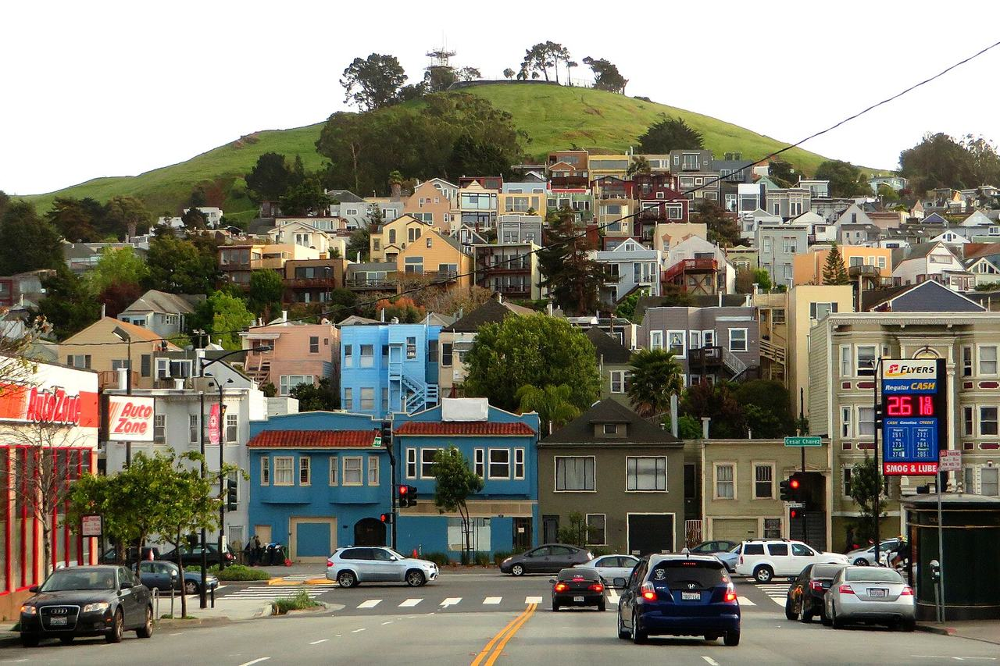

Bernal Heights
A hilly residential district south of the Mission, built up from the late 19th century with small houses on modest lots.

Map
Named buildings and landmarks
-
1
-
2
-
3
-
4
Streets documented so far
- Alabama Street
1 building, built 1998. - Anderson Street
1 building, built 1925. - Andover Street
1 building, built 1907. - Bonview Street
1 building, built 1958. - Bradford Street
1 building, built 1912. - Brewster Street
1 building, built 1999. - Cesar Chavez Street
1 building, built 1991. - Coleridge Street
1 building, built 1900. - College Avenue
1 building, built 1928. - Cortland Avenue
1 building, built 1910. - Costa Street
1 building, built 1906. - Crescent Avenue
1 building, built 1900. - Ellsworth Street
1 building, built 1956. - Faith Street
1 building, built 1998. - Franconia Street
2 buildings, built 1964–1965. - Genebern Way
1 building, built 1925. - Gladys Street
1 building, built 1907. - Highland Avenue
1 building, built 1915. - Justin Drive
1 building; 1 in the Midcentury Recreation Historic District (Discontiguous). - Lundys Lane
1 building, built 1909. - Manchester Street
1 building, built 1981. - Mirabel Avenue
1 building, built 1924. - Mission Street
2 buildings, built 1916–1918. - Montcalm Street
1 building, built 1900. - Mullen Avenue
A 1,000 sq ft house of 1906, recorded as Carlos Santana's home during high school. - Murray Street
2 buildings, built 1925. - Nevada Street
1 building. - Peralta Avenue
1 building, built 1910. - Powhattan Avenue
1 building, built 1965. - Precita Avenue
Four units of 1905 at the foot of the hill, a 1974 Patty Hearst address. - Prentiss Street
1 building, built 1999. - Prospect Avenue
1 building, built 1979. - Richland Avenue
1 building, built 1907. - Ripley Street
2 buildings, built 1917–1940. - Rutledge Street
1 building, built 1973. - Shotwell Street
1 building. - Virginia Avenue
1 building, built 1910. - Winfield Street
1 building, built 1909. - Wool Street
1 building, built 1906.
Parks and public spaces
- Bernal Heights Park
Regional park, 26.3 acres. - Bernal Heights Rec Center
Neighborhood park or playground, 36,155 sq ft. - Dogpatch - Miller Memorial Garden
Community garden, 13,068 sq ft. - Good Prospect Community Garden
Community garden, 2,178 sq ft. - Holly Park
Neighborhood park or playground, 8.2 acres. - Mullen & Peralta Mini Park
Mini park, 19,602 sq ft. - Ogden Terrace Community Garden
Community garden, 7,405 sq ft. - Park Street Garden
Community garden, 2,178 sq ft. - Prentiss Mini Park
Mini park, 3,049 sq ft. - St. Mary's Rec Center
Neighborhood park or playground, 13.6 acres.
Historic districts here
Adjacent neighborhoods
The hill has a neighborhood on every side. The Mission adjoins north across Cesar Chavez Street, Noe Valley north-west and Glen Park west across San Jose Avenue. South of Alemany Boulevard are the Outer Mission and Portola, and Bayview Hunters Point begins east of Bayshore Boulevard.